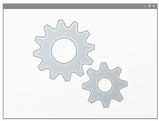

Travail sur la ligne de commande¶
ou comment interagir avec le système d'exploitation sans utiliser son interface graphique

Une interface graphique qui a fait le succès de microsoft¶
Microsoft est l'entreprise qui a développé les premiers systèmes d'exploitation proposant une interface graphique au début des années 1990. Avant cette date, il fallait possèder des connaissances techniques pour exploiter les ressources d'un ordinateur. Les systèmes Windows (95, NT, XP, ...) ont démocratisé l'utilisation des machines au point où tout le monde pouvait maintenant s'en acheter une pour son utilisation personnelle: c'est le début de l'ère des PC(personal computer).
L'interface graphique proposée par les systèmes Windows est simple: il suffit de cliquer sur des icônes présentes sur le bureau pour lancer un programme!
En revanche, on ne peut pas faire ce qui n'a pas été prévu: des tâches d'administration par exemple...
Passez la commande!¶
On peut commander le système d'exploitation en utilisant des commandes ou des script. Pour cela, il faut passer en ligne de commande....
Ouvrir l'invite de commandes
- Tapez windows + R puis
cmddans la fenêtre qui s'ouvre - Vous devez obtenir quelque chose qui ressemble à ça: c'est l'invite de commande ou le prompt!

- Tapez
dirpuis la touche Entree
À faire
- Tapez la commande
dir /?dans le prompt. À quoi sert-elle? - Affichez l'aide de la commande
copy
Arborescence des systèmes Windows¶
Lecteurs¶
Sous Windows, les différentes partitions du disque dur sont identifiées par des lettres majuscules:
- historiquement, la partition
systèmecontenant le système d'exploitation est C: - une bonne installation partitionne le disque dur en au moins de lecteur: un pour le système , l'autre pour les données. En cas de panne du système, on peut tout de même accèder aux données même si il faut formater la partition système.
- d'autres lecteurs( E:,F:,..) peuvent exister: lecteurs réseaux ou simplement une clé USB.
À faire
- Ouvrez l'explorateur de documents de votre ordinateur.
- Nommez les différents lecteurs que vous pouvez oberver
Organisation des dossiers et des fichiers¶
Les partitions contiennent des dossiers ou répertoires et des fichiers. Les dossiers peuvent aussi contenir des dossiers appelés sous-dossiers, qui contiennent eux-mêmes des dossiers et/ou des fichiers...
Selon vos droits attribués lorsque vous vous identifiez, vous pouvez avoir des droits sur ces fichiers ou dossiers:
- droit de lecture, vous pouvez lire sans modifier le contenu.
- droit d'écriture, vous pouvez lire et modifier le contenu.
- aucun droit, le dossier ou le fichier existe mais vous ne pouvez même pas le voir!
D'autres droits existent que nous ne développerons pas ici.
À faire
Quels droits avez-vous sur les lecteurs de votre ordinateur?
Chemin absolu et relatif¶
Pour pointer vers une ressource(fichier ou dossier), on utilise son chemin. Il peut être:
- absolu: le chemin commence par la lettre de la partition et donne le nom de tous les dossiers qu'il faut travaerser pour arriver à la ressource. Par exemple, le chemin absolu de ce fichier est:
C:\Users\Utilisateur\tpbash\docs\index.md - relatif: le chemin identifie le chemin à partir du répertoire courant. Par exemple, les images de cette page sont stockées dans un dossier
dataet le chemin qui pointe vers l'image ci-dessous qui se nommechemin.pngest\data\chemin.png:
Naviguer dans l'arborescence en ligne de commandes¶
Des commandes de bases¶
diraffiche le contenu du répertoire courant. Pour connaître les options de cette commande , vous pouvez taperdir /?pour afficher l'aide!cd nom_du_dossier(change directory) permet de se déplacer dans le dossiernom_du_dossiersi il existe!cd..permet de remonter d'un niveau dans l'arborescence.mkdir(make directory) crée un nouveau dossier dans le répertoire courant!copycopie des fichiers ou des dossiers de la source vers la destination (tapezcopy /?pour plus d'infos...)del(delete) efface le fichier passé en argument...
Le caractère * , appelé joker, remplace n'importe quel texte dans le nom d'un fichier. Par exemple, la commande:
copie tous les fichiers portant l'extension.txt dans le dossier backup.
À faire
- Ouvrez l'invite de commande.
- Dans le dossier
Mes documents, créer un dossiertestet un dossierbackup. - Allez ensuite dans ce dossier.
- Tapez la commande
notepad coucou.txt. Normalement, le bloc notes s'ouvre avec un avertissement. Confirmez votre volonté de créer ce fichier et mettez y le contenu de votre choix. - Fermez
notepadpar la combinaison de touches Alt+F4 - Vérifier que le fichier
coucou.txtexiste bien dans le dossier test. - Copier ce fichier dans le dossier
backupet vérifier que la copie a fonctionné!
Les variables d'environnement¶
Comment dans la manipulation précédente, l'exécutable de notepad a t-il pu être lancé? Son seul appel suffit-il ? Bizarre...
À faire
En ligne de commande, tapez firefox. Que se passe t-il?
Les variables d'environnement sont des variables qui peuvent être appelées partout par tous les programmes. Elles stockent des informations considérées importantes commme:
- le nom de l'ordinateur, de l'utilisateur
- le chemin du répertoire
TEMPcontenant les fichiers temporaires - la variable
PATHcontient le chemin d'exécutables qui peuvent être appelés partout dans les programmes
À faire
- Ouvrez l'invite de commande.
- Tapez
PATHet observez les chemins proposés - Tapez
echo %USERNAME%, pour afficher la valeur de la variableUSERNAME
Les fichiers de commande(.bat)¶
On souhaite souvent exécuter les mêmes tâches en ligne de commande. On peut alors regrouper les commandes dans un fichier qui sera directement lue par le système DOS: ce sont les fichiers dont l'extension est .bat
À faire
- En ligne de commande tapez:
- Ouvrez le bloc notes en tapant la commande
notepad( si elle est au path...) puis recopiez le texteecho Nous sommes le %date%, il est %time% - Sauvegardez le fichier sous le nom
dateheureavec l'extension.bat. Vous devriez voir apparaître un engrenage dans l'icône décrivant le fichier:  - Exécutez alors ce fichier par un double-clic. Que se passe t-il?
- Modifier le fichier en ajoutant une ligne avec l'instruction
pause. Sauvegardez et exécutez à nouveau le fichier.